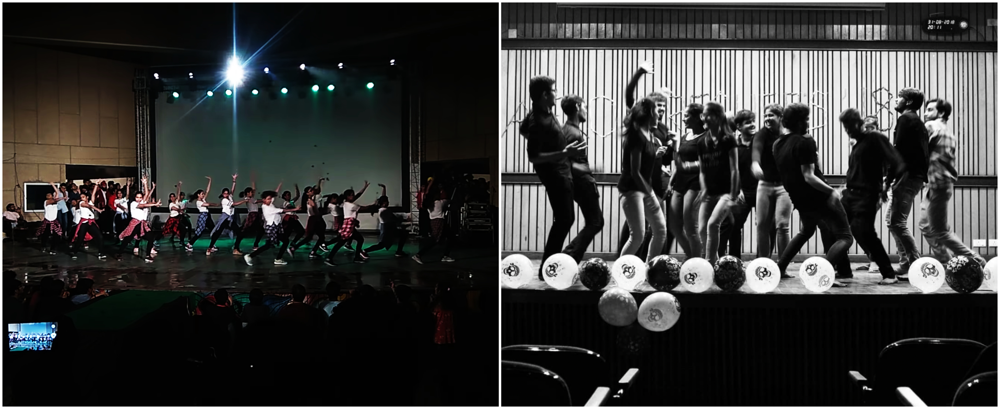

Activities
Aquatics Team
 |
I have had many cherished memories with my teammates both in the pool and outside.
They have been a constant source of support and advice through my years in college.
Aeromodelling Club
 |
Joining the Aeromodelling club was one of the no-doubt activities I had always wanted to be a part of. I felt that it was very important for an Aerospace engineer like myself to take part in the actual modelling, fabrication and testing of aircrafts as it would provide insights and more intriguing interest in the field.
Dance Club
|  |
Through the freshmen year of college, I was involved in various dance events such as freshers dance night and department freshers.